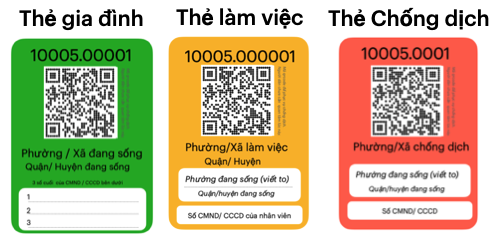

Chiến lược Phòng chống dịch COVID-19 và Phát triển kinh tế theo từng Phường/Xã
TP Hồ Chí Minh ngày 7/9/2021
Kính gửi:
- Ông Phạm Minh Chính, Thủ tướng Chính phủ nước Cộng hòa Xã hội Chủ nghĩa Việt Nam,
- Ông Vũ Đức Đam, Phó Thủ tướng Chính phủ, Trưởng Ban Chỉ đạo Quốc gia Phòng, chống dịch COVID-19,
- Ông Tô Lâm, Bộ trưởng Bộ Công An,
- Ông Nguyễn Thanh Long, Bộ trưởng Bộ Y tế,
- Văn phòng Chính phủ,
- Ban Bí Thư Trung ương Đảng Cộng sản Việt Nam,
- Ban Kinh tế Trung ương Đảng Cộng sản Việt Nam,
- Ban Tuyên giáo Trung ương Đảng Cộng sản Việt Nam,
- Ủy ban Xã hội của Quốc hội.
Chúng tôi gồm các tổ chức thành viên tập hợp trong các Mạng lưới, Liên minh dưới đây (chi tiết xem thêm Phụ lục 1):
Hưởng ứng lời kêu gọi của Thủ tướng Chính phủ Phạm Minh Chính [1] “Toàn dân tham gia phòng chống đại dịch” (01/5/2021), của Chủ Tịch nước Nguyễn Xuân Phúc ngày 27/5/2021[2], của Tổng Bí thư Nguyễn Phú Trọng [3] ngày 29/7/2021 gửi toàn thể người dân Việt Nam cả trong và ngoài nước, chúng tôi, .... , đã cùng nhau phát triển các góp ý điều chỉnh các chính sách phòng chống dịch COVID-19 trước tình hình mới.
Kiến nghị này được tạo ra qua ba bước:
-
(1) Tổ chức cuộc hội luận chuyên gia gồm cả trong và ngoài nước vào ngày 12/08 (xem phụ lục 2) với chủ đề: “Thảo luận chuyên gia kiến nghị chính sách phòng chống dịch COVID-19 trong tình hình mới;
-
(2) Xây dựng kiến nghị dựa trên kết quả hội luận, và thông qua góp ý rộng rãi của tất cả các tổ chức thành viên các Mạng lưới, Liên minh trên trong các ngày 13 và 14/08/2021;
-
(3) Tiếp tục chỉnh sửa kiến nghị cho phù hợp hơn nữa với tình hình mới dựa trên cập nhật kết quả Hội nghị trực tuyến của Chính Phủ sáng 15/08/2021 về phòng chống COVID-19 do Thủ tướng Phạm Minh Chính chủ trì.
Xin gửi tới tập thể Lãnh đạo Nhà nước thành quả làm việc của chúng tôi trong những ngày qua.
Kính thưa Chủ tịch nước và Thủ tướng Chính phủ,
Chúng tôi tin rằng, trước quyết tâm rất cao và sự chỉ đạo rất linh hoạt gắn liền với thực tiễn của Thủ tướng chính phủ, một số kiến nghị nêu dưới đây khi tới được các địa chỉ chắc chắn đã lại trở nên lạc hậu
CƠ SỞ ĐỂ ĐỀ XUẤT CHIẾN LƯỢC PHÒNG CHỐNG DỊCH TRƯỚC TÌNH HÌNH MỚI
Trước hết, chúng tôi khẳng định, Chính phủ đã có những chỉ đạo điều chỉnh rất đúng và rất kịp thời, mới nhất là Phiên họp Chính phủ thường kỳ tháng 8 năm 2021 [4] ngày 6/9/2021 dưới sự chủ trì, điều hành của Thủ tướng. Cụ thể các điểm sau:
-
“mỗi xã, phường, thị trấn là một pháo đài; mỗi người dân là một chiến sỹ; người dân vừa là trung tâm, vừa là chủ thể trong phòng, chống dịch.”
-
tuyên truyền, vận động để “dân biết, dân hiểu, dân tin, dân theo và dân làm.”
-
“ nghiên cứu giải pháp thích ứng an toàn trong điều kiện mới; xây dựng kịch bản khôi phục, phát triển kinh tế trong tình hình mới.”,
Trên cơ sở đó, chúng tôi nêu thêm các cơ sở nhận định và khuyến nghị của chúng tôi dưới đây đề nghị Chính phủ và Lãnh đạo Nhà nước tham khảo:
Thứ nhất, đã có những bằng chứng khoa học mới nhất giúp nhận định chính xác hơn về biến chủng DELTA và khả năng xuất hiện các biến chủng mới, cần được tham khảo đưa vào ngay mọi hoạch định chiến lược tới đây, cả trước mắt và kế hoạch trung hạn, nhằm gia tăng thế chủ động cho công tác phòng chống dịch của đất nước:
- Bằng chứng khoa học về vai trò của vắc xin và nguy cơ diễn biến dịch lâu dài: Miễn dịch tạo bởi các vắc xin tốt nhất hiện có (Moderna, Pfizer, Johnson and Johson, Astrazeneca) giảm diễn biến nặng và hạ thấp số tử vong khi bị mắc vi rút, nhưng chưa đủ hiệu lực để chặn hoàn toàn sự lưu hành của vi rút, khiến khả năng xuất hiện biến thể mới là chắc chắn xảy ra. Dịch sẽ tiếp tục tồn tại lâu dài hơn như đã dự đoán trước đây, kể cả khi đã đạt tỷ lệ tiêm chủng cao tới 70% dân số, khiến các nước đang phải lên kế hoạch có mũi tái chủng (mũi 3) cho những đối tượng có nguy cơ cao giảm miễn dịch và xem xét kế hoạch chỉ định triển khai đại trà cho toàn thể người dân trong thời gian tới [5].
-
Bằng chứng khả năng xảy ra biến đổi của vi rút tạo chủng mới với những đe dọa mới: Nhân loại đang phải đương đầu với một loại vi rút có khả năng gây bệnh và chống chọi sự can thiệp y tế vượt hẳn so với các loại vi rút gây bệnh đường hô hấp đã biết trước đây. Báo cáo của Hội đồng Tư vấn khoa học phòng chống dịch bệnh khẩn cấp SAGE của Anh (The Scientific Advisory Group for Emerfencies- SAGE- in the United Kingdom), dựa trên các kết quả nghiên cứu khoa học mới nhất đã kết luận rằng với khả năng phòng chống dịch trên toàn cầu như hiện nay, vi rút SARS-COV-2 chắc chắn sẽ tạo biến chủng mới, nguy cơ phát triển thành dạng nguy hiểm hơn cả chủng DELTA là hoàn toàn có khả năng. Chính phủ và toàn dân phải chuẩn bị chủ động đối phó với chiều hướng này. Nhóm tư vấn SAGE đã đưa ra 4 tình huống và nhận định cụ thể xác suất xảy ra [6] giúp định hướng chính sách phòng chống dịch cả trước mắt và lâu dài. Trong đó chúng tôi xin lưu ý ở đây các điểm trọng yếu của báo cáo SAGE:
-
Chắc chắn sẽ xảy ra (to be likely) khả năng biến chủng mới kháng lại được tất cả các loại thuốc chống vi rút;
-
Gần như chắc chắn (an almost certainty) sẽ xuất hiện chủng mới có khả năng “bất hoạt” được các loại vắc xin (tức các vắc xin hiện có trở nên vô dụng);
-
Có khả năng thực tế (a realtistic possibility) vi rút phát triển thành biến chủng mới có khả năng gây tử vong cao hơn như đã thấy ở các vi rút cùng nhóm COVI gây các dịch trước đó (SARS-COV và MERS-COV). Tức là, từ mức tỷ lệ tử vong hiện tại chỉ 1-2% (ở những người nhiễm vi rút) sẽ phát triển lên tới 10-35%;
-
-
Những bằng chứng thực tế gần đây tại các điểm dịch TP. Hồ Chí Minh khi thực hiện phong tỏa kéo dài kéo theo một loạt vấn đề xã hội khác nảy sinh, đòi hỏi cần điều chỉnh và tìm đến các biện pháp chống dịch mềm dẻo thực tế hơn, hiệu quả hơn.
Thứ hai, dịch bệnh COVID-19 là hậu quả của sự phá vỡ môi trường sinh thái[7], sự thất bại trong bảo đảm vai trò khoa học dẫn đường cho các chính sách can thiệp kinh tế - xã hội kéo dài ở cấp độ toàn cầu! Cần nhìn nhận đại dịch COVID-19 là sự tiếp nối của xuất hiện các vụ dịch trước đó như dịch SARS (2003)[8] hay MERS (2012)[9]. Nguy cơ xuất hiện thêm các vụ dịch nhiễm trùng mới, gây bởi nhóm vi rút Corona hoặc loại khác, là chắc chắn, nếu toàn cầu không tạo được một hành lang pháp lý bắt buộc thực hiện các biện pháp an ninh y tế toàn cầu gắn liền với phòng chống biến đổi khí hậu.
ĐỀ XUẤT ĐIỀU CHỈNH CỤ THỂ
Ở tầm Chiến lược chung
Thứ nhất: Quy hoạch theo Phường/Xã những nhu cầu di chuyển hàng ngày
Để phòng chống Covid-19, cần thiết lập Cơ chế Phát hiện xâm nhập cho từng Phường/Xã bằng cách xét nghiệm tất cả những người có lịch sử ra vào. Nguồn lực xã hội (đội ngũ y tế, chi phí xét nghiệm, thời gian của người dân,...) sẽ được giảm thiểu rất nhiều nếu giảm tối đa số người cần xét nghiệm.
Do đó cần quy hoạch các nhu cầu di chuyển theo Phường/Xã, để giảm tối đa việc ra vào mỗi ngày, để tối ưu nguồn lực cho phép tất cả Phường/Xã áp dụng Cơ chế Phát hiện xâm nhập thường xuyên (3 ngày/lần) khi Chống dịch, và duy trì định kỳ (1 tuần/lần) trong "Bình thường mới".
Cơ chế Phát hiện xâm nhập định kỳ giúp phát hiện sớm F0 trong Phường/Xã, thông báo các Phường/Xã liền kề, có F0 di chuyển tới, cùng phối hợp để ngăn chặn sớm, không để âm thầm lây lan trên diện rộng. Các Phường/Xã còn lại tăng cường Phát hiện xâm nhập với những người di chuyển vào ra và duy trì hoạt động bên trong như bình thường.
Sau khi truy quét toàn bộ F0 bên trong, tăng cường kiểm tra, Phát hiện xâm nhập để kiểm soát "tái nhiễm", các Phường/Xã an tâm, tự tin gỡ bỏ giãn cách, mở lại nhiều hoạt động kinh doanh bên trong. Không bị "tái nhiễm" sẽ bảo vệ thành quả chống dịch trước đó, sớm đưa Phường/Xã trở lại "bình thường mới" một cách bền vững.
Khi tất cả Phường/Xã cùng triển khai, cơ chế Phát hiện xâm nhập sẽ bổ sung, cộng hưởng lẫn nhau, tạo thành 1 mạng lưới Cảnh báo nguy cơ cho toàn vùng (một tỉnh/ thành phố) hoặc cả nước. Mạng lưới Cảnh báo kết hợp với việc quy hoạch theo Phường/Xã, hình thành mô hình "Ruộng bậc thang", hạn chế tốc độ lây lan một cách tư nhiên, tăng cường hiệu quả trong phòng, chống Covid và các bệnh truyền nhiễm theo di chuyển, tiếp xúc của con người.
Với "Ruộng bậc thang", không cần phải giãn cách toàn xã hội, các hoạt động kinh tế vẫn tiếp tục như bình thường.
Dưới đây là các nhu cầu di chuyển có thể quy hoạch theo Phường/Xã như sau:
-
Mua hàng mỗi ngày, chủ yếu là nhu yếu phẩm, có thể quy hoạch
-
Đi làm mỗi ngày: quy hoạch để di chuyển theo đường giáp ranh để không ra, vào Phường/Xã, trừ nơi sinh sống và nơi làm việc.
-
Giao nhận hàng hoá: chia thành 2 loại di chuyển, quy hoạch thanh 2 đội:
- Đội Tài xế Nội khu: tự do di chuyển bên trong, nhưng không được ra ngoài Phường/Xã. Hàng hoá ra ngoài Phường/Xã sẽ chuyển tới các điểm tập kết liên Phường/Xã.
- Đội Vận chuyển Liên khu (Shipper hai bánh, xe tải nhỏ,...) sẽ trung chuyển hàng hoá tới điểm tập kết ở Phường/Xã nơi đến.
- Đội Liên khu không được vào trong Phường/Xã, giao hàng cho người dân hay tiếp xúc với Đội Nội khu.
-
Công việc phổ thông, nhân viên bán hàng, ngân hàng,... nên quy hoạch cho nhân viên sống trong Phường/Xã
- Doanh nghiệp, cơ quan có nhiều chi nhánh như siêu thị, ngân hàng,... sắp xếp, hoán các nhân viên đang có.
- Các dịch vụ buôn bán đường phố,... sử dụng nhân lực bên trong.
-
Trong ngắn hạn, tuyển dụng người dân bên trong Phường/Xã để bổ sung cho các nhu cầu còn thiếu như Shipper nội khu hoặc nhân viên bán hàng, đi chợ hộ,...
-
Các nhu cầu làm việc bên ngoài, sẽ cấp Thẻ để giám sát và giới hạn số lượng tuỳ theo nguy cơ dịch bệnh.
Để việc quy hoạch hiệu quả, đối tượng cần điều chỉnh là doanh nghiệp, cơ quan,.... Các đối tượng này sẽ từ từ điều chỉnh việc di chuyển của cá nhân: nhân viên và người dân được phục vụ. Đây là lý thuyết đòn bẩy của khoa học về hệ thống xã hội.
Chính quyền địa phương tập trung giám sát việc tuân thủ của doanh nghiệp, cơ quan, sẽ tối ưu hơn việc kiểm soát người dân. Công an, dân phòng cần tập trung vào phát hiện các đối tượng vi phạm, thay vì kiểm tra giấy tờ của mọi người, và tăng cường kiểm tra tại các điểm đến hơn là cố định tại vài Chốt chống dịch.
Về lâu dài, Chính phủ cần có chính sách để khuyến khích việc nhu cầu di chuyển bên trong Phường/Xã và khu vực rộng hơn (Quận/huyện).
-
Bộ tiêu chí quy hoạch di chuyển để Phòng chống bệnh truyền nhiễm, khuyến khích doanh nghiệp bố trí nơi làm việc gần với nơi nhân viên đang sinh sống. Doanh nghiệp sẽ cân nhắc giữa lợi ích từ việc quy hoạch với "chi phí Covid" phát sinh như xét nghiệm định kỳ,nguy cơ tạm ngưng hoạt động khi dịch bùng phát,...
-
Mô hình "remote teams": Khuyến khích doanh nghiệp tổ chức nhân sự thành nhiều nhóm nhỏ, sinh sống gần nhau, để làm việc trong một văn phòng trong khu vực đó. Mô hình này sẽ bền vững và hiệu quả hơn mô hình "work from home" hiện nay.
-
Và nhiều quy định khác để hạn chế các sự kiện không cần thiết gây di chuyển loạn xa, tập trung đông người.
Thứ hai: Phục vụ theo gia đình
Mục tiêu cần hướng tới là tối ưu nguồn lực xã hội, nhất là các nguồn lực bị hạn chế, khan hiếm giữa giãn cách xã hội, để điều tiết và bảo đảm mọi gia đình đều được phục vụ.
Cần hạn chế tối đa các hành vi không cần thiết như tích trữ quá mức, thu gom mà không sử dụng, hoặc tệ hơn là bán lại kiếm lời,... gây nên kham hiếm giả tạo, tăng giá. Nếu để tình trạng khan hiếm, tăng giá kéo dài, những gia đình gặp khó khăn (về tài chính, trong khu phong toả, chăm sóc y tế,...) sẽ mất dần cơ hội được phục vụ.
Chúng tôi đề xuất một Cơ chế điều tiết thông qua Thẻ gia đình với ID riêng cho nhiều nhu cầu như:
Mua bán hàng hoá theo gia đình:
- Chợ, siêu thị chỉ bán hàng theo ID, với giới hạn theo Phường/Xã, khung thời gian, loại mặt hàng,...
- Giao hàng theo ID trùng với trên đơn hàng, tối ưu theo nhóm gia đình gần nhau.
- Siêu thị, chợ sẽ điều tiết, chuẩn bị hàng hoá tốt hơn dựa trên tổng số ID trong Phường/Xã
- Chính quyền sẽ dự đoán được mức độ đáp ứng nhu cầu người dân theo từng khu vực, để có kế hoạch phân bố, vận chuyển hàng hoá tốt hơn giữa các Phường/Xã.
An sinh xã hội: cho những gia đình được Phường/Xã xác nhận
- phân bố cân bằng nguồn lực cứu trợ của chính quyền
- nguồn lực từ thiện được phân bố đúng đối tượng
Các nhu cầu khác liên quan tới Phòng chống Covid-19 như: xét nghiệm, cách ly tại nhà, tiêm vaccine,... cũng cần được phục vụ và điều tiết theo Thẻ gia đình.
Khi quay về "bình thường mới", xã hội sẽ còn nhiều khó khăn về cung cấp hàng hoá, tài chính, nhân lực,.... Do đó "phục vụ theo gia đình" sẽ là một cách điều tiết quan trọng để tối ưu nguồn lực hạn hẹp.
Thứ ba: Thay đổi mọi người, hình thành những thói quen tích cực
1. "Quét Thẻ tại tất cả điểm đến" là thói quen quan trọng mà mọi người cần có.
Khi "quét Thẻ" được thực hiện tại hàng triệu điểm đến, chúng ta sẽ có được dữ liệu điểm đến theo thời gian thực, sát với di chuyển thực tế. Dữ liệu điểm đến quan trọng và bao hàm luôn dữ liệu tại các Chốt kiểm tra. Dữ liệu này sát với thực tế, hơn là khai báo (y tế, di chuyển) do người dân tự thực hiện.
Giá trị của dữ liệu các điểm đến là để phát hiện nguy cơ nhằm cảnh báo:
-
Cảnh báo cho cá nhân: khi tới các điểm vừa phát hiện F0
-
Cảnh báo cho doanh nghiệp: tăng cường quản lý nhân viên, có những khuyến nghị để "quy hoạch theo khu vực" tốt hơn.
-
Cảnh báo cho Phường/Xã: bắt buộc xét nghiệm thường xuyên, những người có lịch sử ra vào.
-
Cảnh báo cho công an, dân phòng các cá nhân vi phạm nhiều lần, cần kiểm tra tại nhà để ngăn chặn kịp thời.
Dựa trên việc không có dữ liệu, phát hiện những bất thường ở mức hệ thống,là nguy cơ bùng phát dịch bệnh. Ví dụ: Có nhiều gia đình trong 1 khu phố KHÔNG CÓ lịch sử mua hàng, di chuyển trong 2,3 tuần gần đây. Đây là một bất thường ở mức hệ thống, cần điều tra nguyên nhân thực tế.
Dữ liệu di chuyển giữa các điểm đến là công cụ đo lường quan trọng, giúp nâng cao hiệu quả của "Quy hoạch theo khu vực", "Phục vụ theo gia đình".
2. Tuân thủ các quy định đưa ra là hành động, có thể tạo thành thói quen.
Để hình thành thói quen này, "các quy định đưa ra" cần mô tả rõ hành động, càng đơn giản càng tốt. "Quét Thẻ", "Đeo Thẻ khi di chuyển" là minh hoạ cho các quy định như trên. "các quy định này" gọi chung là Lệnh, với ngầm ý mọi người phải (cần) tuân thủ nó.
Kết hợp Thẻ Lệnh sẽ tạo nên sức mạnh để "tuân thủ trở thành thói quen". Và là thói quen cho của nhiều đối tượng khác nhau có liên quan tới Thẻ:
- Đối tượng Cấp Thẻ: cán bộ phường/Xã
- Đối tượng Phục vụ Thẻ: nhân viên chợ, siêu thị,...
- Đối tượng Kiểm tra: công an, dân phòng, người dân tự kiểm tra,...
- Đối tượng Giám sát: đội ngũ giám sát dữ liệu di chuyển,...
- Đối tượng không có Thẻ: bị ảnh hưởng bởi người xung quanh, dần dần tuân thủ.
Và như bất kỳ thói quen nào, "Tuân thủ" cũng gây nhiều khó chịu, bất tiện với mọi người. Nhưng sau một thời gian, mọi người sẽ nhận ra nhiều lợi ích của thói quen Tuân thủ: ít bị làm phiền (bị kiểm tra, gây khó dễ,...), tiếp theo là sự an tâm khi thấy nhiều người xung quanh tuân thủ, và cuối cùng là sự tự do trong khuôn khổ.
Với trách nhiệm là bên đưa ra Lệnh, Chính quyền cũng cần tuân thủ các lệnh này. Đó là không được gây khó dễ, mất thời gian khi mọi người tuân thủ.
3. Tăng niềm tin, suy nghĩ tích cực trong xã hội
Trong Đại dịch Covid, có nhiều yếu tố làm giảm niềm tin : sự lo lắng, sự nghi ngờ người lạ, sự cô lập,.... Đây là sự mất mát rất lớn, để lại hậu quả lâu dài trong xã hội. Thiếu niềm tin, mọi người sẽ khó lòng hợp tác, phối hợp với nhau, gây nên sự cản trở rất lớn với mục tiêu chung của xã hội.
Bên cạnh những chiến lược, kế hoạch hợp lý, thì việc tăng niềm tin cũng góp phần quan trọng để đạt được kết quả mong muốn.
Mỗi người, thông qua những hành động nhỏ như "quét Thẻ", "đeo Thẻ" (tuân thủ) sẽ làm tăng niềm tin của những người xung quanh. Một loạt hành động nhỏ, nhưng nhất quán sẽ củng cố niềm tin của mọi người trong xã hội, ngay cả những người nghi ngờ nhất.
Và Chính phủ có thể tăng niềm tin của xã hội bằng hành động chấp điểm kết quả chống dịch theo Phường/Xã mỗi ngày,... nhằm khích lệ sự tinh thần thi đua, phối hợp chống dịch của mọi người.
Với 3 nội dung ở Tầm Chiến lược chung, sẽ tạo nên thay đổi rất lớn trong xã hội. Trong hoàn cảnh bình thường, gần như không thể thực hiện các quy hoạch, thay đổi này. Nhưng Đại dịch Covid-19 là cơ hội để thực hiện những điều "tưởng chừng không thể".
Với người dân, sẽ có bất tiện ban đầu, nhưng so với các quy định khắt khe trong giãn cách, thì việc di chuyển bên trong Phường/Xã một cách tự do cũng là sự khác biệt lớn. Về lâu dài, người dân sẽ được nhiều lợi ích như: được phục vụ tốt hơn mà không phải đi xa, được làm việc gần nhà hơn, ít bị kẹt xe tắt đường ở đô thị lớn,... và nhất là không phải trở lại giãn cách toàn xã hội như trước đây.
Với Doanh nghiệp, ngoài lợi ích được trở lại hoạt động sớm, thực hiện quy hoạch nhận được nhiều lợi ích lâu dài như: hiệu quả của nhân viên tăng do thời gian đi lại giảm, ít bị kẹt xe tắt đường, không phải trả nhiều "chi phí Covid", không bị gián đoạn hoạt động khi dịch bệnh bùng phát,...
Chính phủ tận dụng cơ hội "trăm năm có một" này và triển khai từng bước theo lộ trình, sẽ giải quyết được nhiều bài toán lớn của đô thị đông dân cư: an sinh xã hội, kẹt xe tắt đường, ô nhiễm môi trường,... và nâng cao hiệu quả toàn xã hội, phát triển kinh tế bền vững trong một môi trường an toàn, hài hoà.
Trên đây là 3 đề xuất ở tầm chiến lược chung về giải pháp Phòng chống dịch bằng Thẻ Lệnh. Về các bước triển khai, chúng tôi xin trình bày ở mức tổng quan các ý chính, cho 2 giai đoạn: Chống dịch và trở về "bình thường mới"
II. Triển khai theo từng giai đoạn
Giai đoạn Chống dịch:
1. Cấp phép di chuyển, giám sát lịch sử các điểm đến và lịch sử xét nghiệm bằng Thẻ Lệnh.
Thẻ Lệnh cần một hệ thống công nghệ thông tin để hoạt động. Hệ thống CNTT này chứa dữ liệu di chuyển của mọi người, và Bộ Công An là bên phù hợp để quản lý dữ liệu này.
Đầu tiên, Công An (cấp tỉnh thành phố) sẽ phát hành Phôi Thẻ giấy cho từng Phường/Xã. Số lượng Phôi nên nhiều hơn nhu cầu thực tế để tăng hiệu quả việc cấp Thẻ.
Có các mẫu Phôi chính cho 3 nhu cầu: mua hàng, làm việc và chống dịch

- Số ID ngắn nhất, có tiền tố là ID của Phường/xã, để thân thiện khi sử dụng để khi đặt hàng qua điện thoại đọc số ID, khi ghi ID vào giấy,...
- Sử dụng Thẻ giấy hiệu quả thực tế so với cấp giấy, mã qrcode,....
- Người dân không có điện thoại, vẫn sử dụng được Thẻ này.
- Thông tin chi tiết về trạng thái Thẻ, giới hạn sử dụng sẽ được lưu trong mã qrcode.
- Thẻ gia đình thay thế cho Phiếu mua hàng, Thẻ làm việc thay thế cho Giấy đi đường.
Những người được phép di chuyển, sẽ được Phường/Xã đóng dấu lên Phôi và cấp Thẻ. Dữ liệu thực tế sẽ được cán bộ Phường/Xã nhập lại trên hệ thống.
Việc cấp Thẻ cho toàn thành phố như Tp HCM, Hà Nội chỉ diễn ra trong vài ngày, không gây tụ tập đông đúc tại các Phường/Xã. Tham khảo tài liệu chi tiết để hiểu cách thực hiện.
Chức năng khoá Thẻ từ xa, giúp linh hoạt trong việc điều chỉnh số lượng Thẻ được phép sử dụng.
Các điểm đến như Chốt chống dịch, chợ, siêu thị, toà nhà, văn phòng,... được phép hoạt động, sẽ được Phường/Xã cấp tài khoản để tạo ra mã Checkpoint như hình

Khi thấy có Checkpoint, mọi người sẽ đưa Thẻ để Công an, Dân phòng, nhân viên..... tại đó quét, hoặc tự thực hiện bằng chính camera trên điện thoại của mình qua 2 bước quét Thẻ. Đây chính là hành động "Quét Thẻ" đã đề cập trong phần Chiến lược chung.
Sử dụng Checkpoint, cho phép triển khai hàng triệu điểm để "quét Thẻ" trong vòng 1 tuần. Tham khảo tài liệu chi tiết để hiểu cách thực hiện.
Ngoài ra còn thêm Lệnh "Đeo Thẻ khi di chuyển" để tăng hiệu quả, cho phép Công An, dân phòng,... phát hiện từ xa vi phạm.
Mục tiêu của Thẻ Lệnh là tăng việc tuân thủ các quy định chống dịch theo Chỉ thị 16 của Chính Phủ và phân loại các đối tượng nguy cơ để bắt buộc xét nghiệm.
Thẻ Lệnh với cơ chế kiểm tra chéo, sẽ đôn đốc cán bộ địa phương sâu sát với người dân, nắm bắt khó khăn của từng hộ, từng cá nhân để có thể hỗ trợ kịp thời. Từng Phường/Xã làm tốt nhiệm vụ của mình, hỗ trợ phối hợp với các Phường/Xã xung quanh sẽ quyết định kết quả

Chính quyền Phường/Xã được phân quyền truy cập, thực hiện các chức năng cần cho hoạt động của Phường/Xã phụ trách.
Triển khai Thẻ Lệnh tới mọi người, tạo ra các thói quen quét Thẻ tại điểm đến sẽ giúp thực hiện tốt nhiệm vụ thứ 2:
2. Hạn chế tối đa số người được phép ra vào Phường/Xã và bắt buộc xét nghiệm định kỳ
Về ngắn hạn, sử dụng các Lệnh bên dưới để hạn chế tối đa số người được phép ra, vào:
-
Cấm ra ngoài Phường/Xã để mua hàng.
-
Không được đi vào trong Phường/Xã khi di chuyển, trừ nơi làm việc và nơi đang sống
-
Chia shipper thành 2 đội: Shipper Nội khu hoạt động bên trong Phường/Xã được phép tiếp xúc với người dân, Shipper Liên khu chỉ được giao nhận hàng tại điểm tập kết ở giáp ranh các Phường/Xã, không được gặp người dân. Shipper Nội khu do Phương/Xã cấp phép và ưu tiên người dân sống bên trong.

-
Chợ, siêu thị sắp xếp nhân viên bán hàng để sống và làm việc bên trong Phường/Xã. Doanh nghiệp, cơ quan có nhiều chi nhánh như Ngân hàng,... cần bố trí lại nhân viên để hạn chế tối đa di chuyển liên Phường/Xã
-
Cấp phép hạn chế số người được ra ngoài Phường/Xã để làm việc.
Đơn vị chủ quản (doanh nghiệp, cơ quan,...) chịu trách nhiệm quản lý, trả phí xét nghiệm định kỳ các cá nhân này cũng như bị xử phạt liên đới khi có sai phạm.
Về dài hạn, quy hoạch nơi làm việc và sinh sống trong một khu vực hợp lý (bên trong một quận huyện)
-
Siêu thị, chợ,... bán hàng theo Phường/Xã, và cần đảm bảo đầy đủ hàng hoá theo nhu cầu.
-
mua hàng bên ngoài Phường/Xã bằng đặt hàng và nhận hàng theo ID Thẻ gia đình.
-
doanh nghiệp tự điều chỉnh theo mô hình remote teams hoặc chấp nhận chi phí Covid: chia nhân viên thành nhiều nhóm nhỏ (có thể không cùng chuyên môn) tại nhiều văn phòng nằm rải rác, thay vì tập trung ở 1 trụ sở, văn phòng lớn. Tuyển dụng nhân sự mới lưu ý tới yếu tố khu vực sinh sống.
-
chính sách quy hoạch, tuyển dụng mới đội ngũ nhân viên để hạn chế việc di chuyển liên Phường/Xã. Hoặc chấp nhận "trả phí Covid" như xét nghiệm định kỳ,...
Bắt buộc xét nghiệm định kỳ là chức năng quan trọng của Thẻ Lệnh.
Người mang Thẻ sẽ được nhận thông báo xét nghiệm định kỳ, và có thể tự kiểm tra khi quét qrcode trên Thẻ.
Phải tuân thủ thực hiện khi có yêu cầu xét nghiệm, nếu không sẽ bị Công An Phường/Xã tới tận nơi để cảnh cáo, bắt buộc.
Doanh nghiệp cần quản lý nhân viên để tuân thủ việc này, nếu không muốn bị liên đới xử phạt.
Các cá nhân thuộc diện cách ly tại nhà, cần tuân thủ Lệnh đưa ra theo Thẻ. Nếu phát hiện vi phạm dựa trên lịch sử điểm đến, công an địa phương sẽ tới tận nơi xử phạt.
3. Cho phép nhiều hoạt động trong Phường/Xã
Tiêu chuẩn phòng dịch cho địa điểm hoạt động
Trừ trường hợp cần giãn cách triệt để thực hiện xét nghiệm toàn bộ,
Các hoạt động đang có trong Phường/Xã vẫn duy trì ở mức hợp lý.
Tuỳ theo mức độ an toàn, và khả năng kiểm soát số lượng ra vào Phường/Xã mỗi ngày, Ban chỉ đạo chống dịch cho phép mở lại các hoạt động bên trong.
Các địa điểm được phép hoạt động sẽ được cấp tài khoản để sinh ra mã Checkpoint, dán tại Cổng vào và Cổng ra.
Các điạ điểm này có thể là Công viên, dịch vụ giải trí, quán ăn, quán cafe,....
Mọi người tới các địa điểm này bắt buộc quét Thẻ tại cổng vào, cổng ra và tuân thủ 5K. Thông qua hệ thống Thẻ Lệnh, Phường/Xã sẽ giám sát việc tuân thủ của các địa điểm này, nhất là số người phục vụ tại mỗi thời điểm.
Áp dụng nhiều hạn chế Chống dịch dựa theo Thẻ, như chỉ phục vụ người dân có Thẻ cấp bởi Phường/Xã đang sống, theo khung giờ dựa trên ID của thẻ.
Giai đoạn "bình thường mới": duy trì thói quen xã hội để phát triển bền vững
Quét Thẻ tại mọi điểm đến
Bán hàng theo Thẻ gia đình
Bổ sung thêm 1 Thẻ gia đình thứ cấp để
Làm việc bên trong, gần với Phường/Xã đang sống
Khi xã hội trở về "Bình thường mới", Thẻ Lệnh đóng vai trò tương tự hệ thống Phòng cháy chữa cháy hiện nay, giúp phát hiện sớm và ngăn chặn nguy cơ bùng phát dịch bệnh.
Checkpoint cho tất cả điểm đến: chốt chống dịch, chợ, siêu thị, toà nhà,.... Mỗi điểm đến có vài checkpoint tại cổng vào, cổng ra, bãi giữ xe,...
https://dangcongsan.vn/nong-trong-ngay/thu-tuong-keu-goi-toan-dan-chung-tay-phong-chong-dich-covid-19-579620.html ↩︎
https://tuoitre.vn/chu-tich-nuoc-nguyen-xuan-phuc-keu-goi-ca-nuoc-chung-tay-day-lui-dich-benh-20210527215903762.htm ↩︎
https://moh.gov.vn/hoat-dong-cua-lanh-dao-bo/-/asset_publisher/TW6LTp1ZtwaN/content/tong-bi-thu-nguyen-phu-trong-ra-loi-keu-goi-phong-chong-ai-dich-covid-19 ↩︎
https://www.vietnamplus.vn/thu-tuong-dieu-hanh-phien-hop-chinh-phu-thuong-ky-thang-8/738740.vnp ↩︎
Public Health England (2021). COVID-19 vaccination programme Information for healthcare practitioners. Republished 6 August 2021, Version 3.10. https://assets.publishing.service.gov.uk›file›CO... ↩︎
https://www.forbes.com/sites/williamhaseltine/2021/08/04/a-warning-about-the-future-of-covid-19-from-the-scientific-advisory-group-for-emergencies-of-the-united-kingdom/ ↩︎
https://www.who.int/health-topics/severe-acute-respiratory-syndrome#tab=tab_1 ↩︎
https://www.who.int/health-topics/middle-east-respiratory-syndrome-coronavirus-mers#tab=tab_1 ↩︎